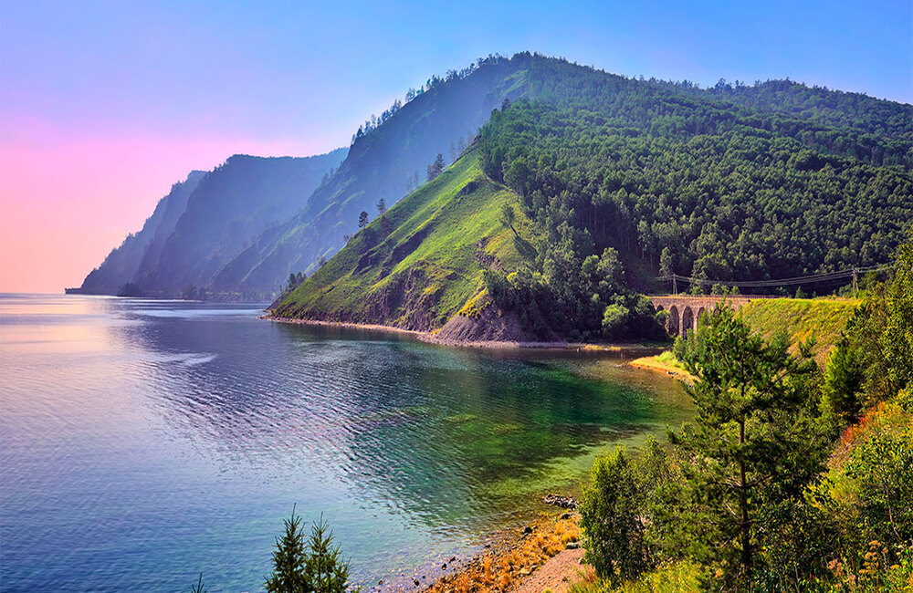
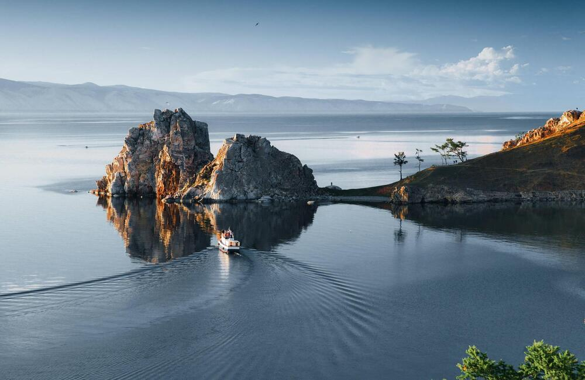
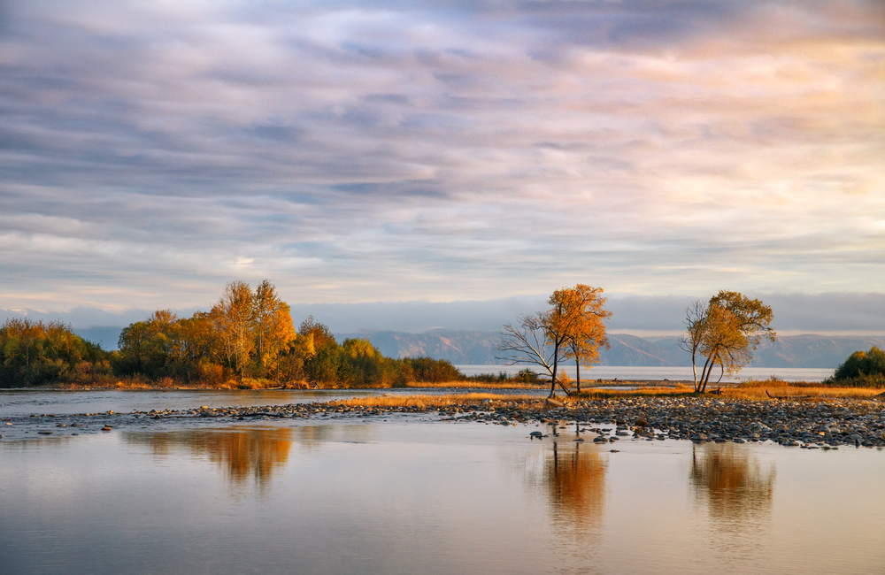
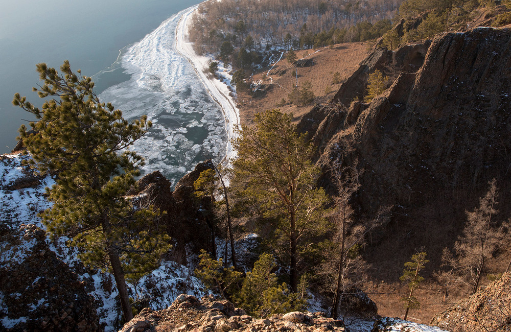
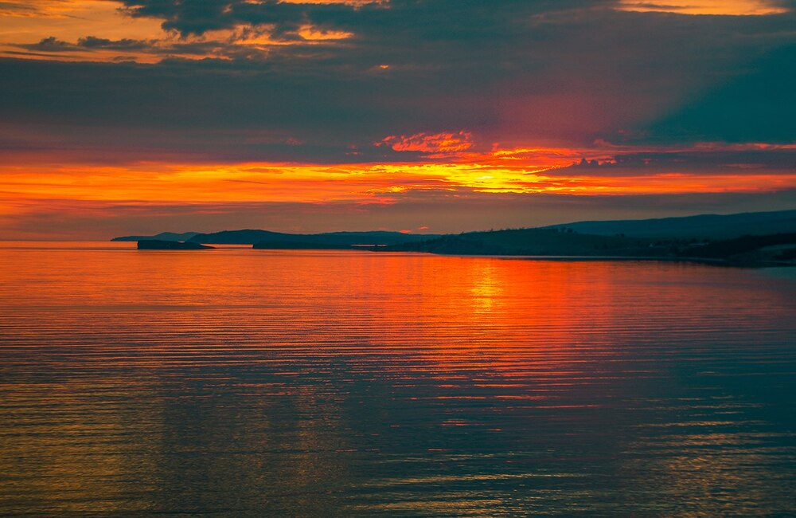

Южное Прибайкалье расположено в зоне перехода от Сибирской платформы к Байкальской рифтовой системе. Территория включает горные массивы Байкальского и Хамар-Дабанского хребтов, а также долины рек Иркут, Ушаковка и Слюдянка.
Основной транспортный доступ осуществляется через Иркутск и Байкальский тракт, а также через трассу Р-258 «Байкал». Отсюда маршруты расходятся в сторону Слюдянки, Култука и южного побережья Байкала.
В районе Слюдянки начинается горный участок, где расположены отроги Хамар-Дабана и выходы к Кругобайкальской железной дороге. Территория характеризуется резкими перепадами высот, густыми лесами и большим количеством горных рек.
Южное побережье Байкала в этом районе отличается каменистыми берегами, участками тайги и выходами скальных пород прямо к воде.
Южный берег Байкала (Иркутская область)
Горы Хамар-Дабан + долины рек
Май – Октябрь